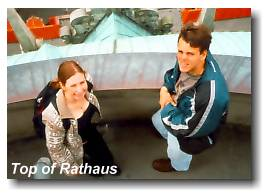
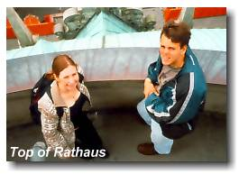
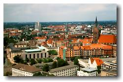
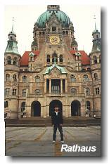
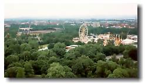
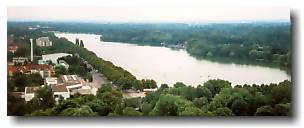
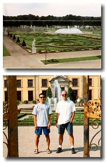
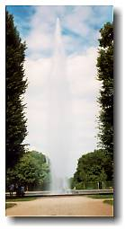

Hannover2, Germany

|
Hannover2, Germany  |
|
"Life is too short to learn German" - Thomas Love Peacock. Sunday June 27, 1999 Ironic? Just a week after writing to everyone that weekend train travel in Germany is cheap and that we’re going to take full advantage of it, I stay in Hannover. Extra Ironic? Next weekend, a few of us are going to bike to another town in Germany. I think the weekend to Weimar saw the end of weekend train travel within Germany. After next weekend, I validate my eurail pass. Oh yes. Let the real travel begin. Being a tourist in your own town is rarely done. (For all you Vancouverites) when was the last time you went to gastown to see the old clock strike six? I’m probably the most guilty of not giving my town the time of day. (e.g. during my 4 month stay in Ottawa, I never saw the inside of the Parliament Building). So, this weekend was the time to be a tourist in my town, Hannover. So what do tourists do when they come to Hannover for a single day? Probably see the Rathaus (city hall), chill out at the Maschsee Lake, and attend the Sprengel modern arts museum. We (me with the company of Ryan and Karyn) did exactly those things on Sunday. In the Rathaus were models of the city in 1689, 1939, 1945, and today. Hannover was small in 1689, but it looked like the city was booming in 1939, only to have it squashed during the war. The 1945 model showed the aftermath. How detailed were the models you ask? Well, Ryan was bragging that his house was the only house on his block still standing after the bombs. |
|
The Rathaus is where you get the best lookout of Hannover. To get to the top, you have to ride a slanted elevator. This tiny elevator starts angled in one direction, wiggles back and forth a little, and then ends up slanted in the other direction. Neato. Sure enough, once at the top, you get a nice view of Hannover. None of us are art lovers, but I’ve never seen a real Picasso. And since the Sprengel Museum had exactly that, I sold the idea of attending to the other two. We went, we saw, we left. In front of Sprengel is Maschsee Lake. It’s a fake lake. A fake lake? Oh yes, a fake lake. A big one at that. 6.5km around. This lake came to be after many people grabbed their shovels and sacrificed their backs. There’s no fooling around here. Unless you knew about the history, you wouldn’t know it’s a fake. There are many fish swimming within and the place is filled with rowboats and sailboats. I knew this was a tourist attraction when I had to pay 3DM for a small can of Sprite. And that’s all she wrote. Sunday July 4, 1999 After our biking trip to Celle (next page), we got back to Hannover at only 2pm. There was still a lot of the day left. We (Ryan and I the bikers to Celle) joined Ben and Paul and headed to Hannover's largest Garden, Herrenhausen Garten. This garden was big. Anything you'd find in Vancouver would pale in comparison. There was also a water shoot that, according to Let's Go Germany, shoots water 80m high. That's where the Harvard Let's Go writers are wrong. If that water shoot is 80m high, I'm 3m tall. Maybe Harvard students need to take some technical electives in the same way that we (engineers) need to take Arts electives. It's unchronologically ordered, but you can find out what we did before the visit to Herrenhausen Garten in the next page. Next: Biking to Celle, Germany |
 johnnyo@canada.com
johnnyo@canada.com